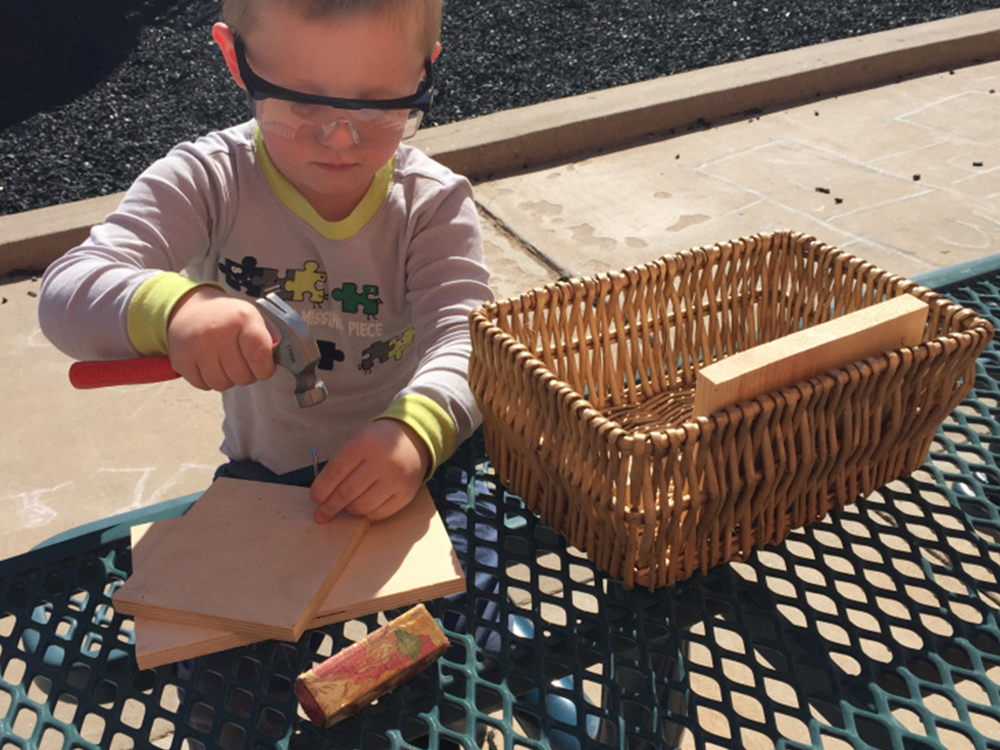

Youngest Children’s Community
Ages 18 months through 3 years old
A community specially designed for our youngest members aged 18 months through 3 years old. The children here are cared for in a safe and nurturing environment that fosters trust in themselves and their world. They are able to develop confidence in their emerging abilities through freely chosen activities that support gross and fine motor skills, as well as language development. The children are given an active role in their daily tasks of self-care, helping them to gain independence.

Children’s House
Ages 3 to 6 year old
Our classroom for 3 to 6 year old children provides them with age-appropriate activities that foster the growth of functional independence, task-persistence and self-regulation. It contains materials designed to refine sensory perception and provide opportunities for language and mathematical skill development. There is also a wide range of activities available that encourage and support creative expression and exploration. We use respectful, clear communication of limits and natural consequences to support the child’s budding social development.